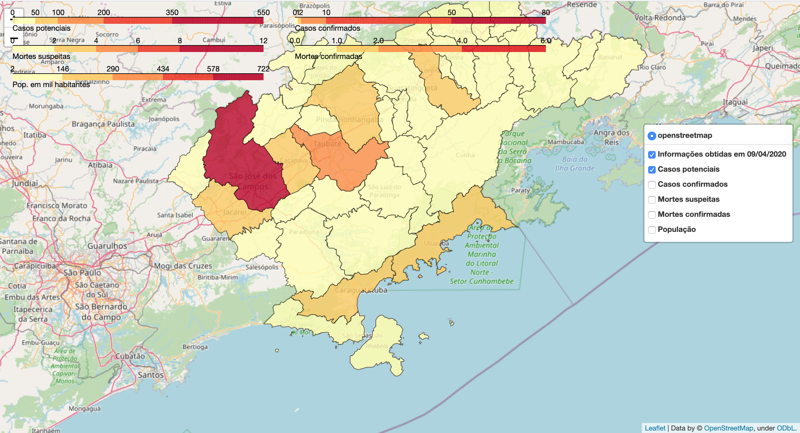

Introdução¶
{kind=link}
Mapa¶
<iframe allowtransparency=”true” scrolling=”no” id=”postcron_overlay” name=”postcron_overlay” src=”chrome-extension://kahoebmmfnjmjcbclecdkhiapmefpaed/templates/iframe.html” style=”border: none; height: 100%; width: 100%; position: fixed; z-index: 2147483647; top: 0px; left: 0px; display: none;”></iframe>
Quem somos¶
O projeto nasceu a partir de algumas discussões sobre os problemas do COVID-19 no mundo e seu impacto no Brasil. O grupo é uma organização voluntária que engloba desde jovens cientistas a população local com ampla área de atuação. Muitos pertencentes a instituições públicas ou privadas, atuando como estudantes de graduação, professores, cientistas pesquisadores e consultores, juntamente com a comunidade local. O grupo pretende reunir dados e questionamentos relevantes, contribuindo para a tomada de decisões pelas autoridades públicas e também informar a população local. No momento, o grupo não é financiado por nenhuma organização pública ou privada, mas motivado e consciente da potencialidade de nossas ações coletivas em um momento crítico como o atual.
O foco de estudo é a RMVale (região metropolitana do Vale do Paraíba e Litoral Norte), área localizada entre as duas metrópoles nacionais São Paulo e Rio de Janeiro. O grupo monitora os casos de COVID-19 na RMVale, abrangendo dados qualitativos bem como quantitativos. Estamos nos concentrando em ter um banco de dados confiável que possa ser usado pela comunidade científica e por aqueles que estejam interessados em um estudo de caso de uma região tão importante como a RMVale.
Podemos definir duas grandes áreas a serem exploradas neste projeto. A primeiro é de natureza técnica, mostrando a evolução dos casos potenciais e confirmados do COVID-19, o impacto das políticas públicas durante a quarentena e a mobilidade existente entre as cidades, por exemplo. Na segunda, há um benefício educacional em que acreditamos que exista um valor inestimável no envolvimento da comunidade com o problema COVID-19. A ação direta e local pode trazer um senso de cidadania e participação que é altamente benéfico para a sociedade, especialmente para aqueles que vivem em condições de marginalização Social.